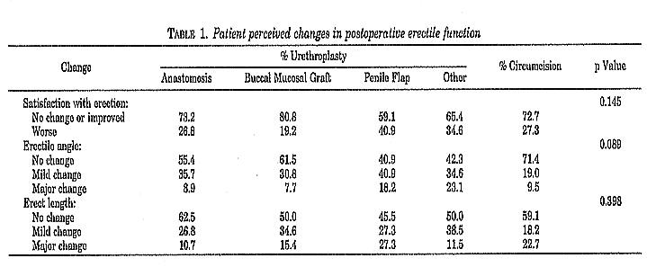
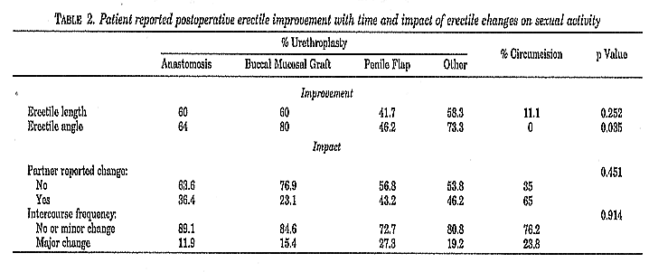

From the Urology Service, Department of Surgery, Brooke Army Medical Center, Fort Sam Houston, Texas, Department of Urology, University of California School of Medicine and San Francisco General Hospital, San Francisco, California, Mississippi Urology Clinic, P. L. L. C. Jackson, Mississippi, Department of Urology, State University of New York, Buffalo and Section of Urology, Lenox Hill Hospital, New York, New York
Purpose: We ascertained the impact of anterior urethroplasty on male sexual function.
Materials and methods: A validated questionnaire was mailed to 200 men who underwent anterior urethroplasty to evaluate postoperative sexual function. Questions addressed the change in erect penile length and angle, patient satisfaction with erection, preoperative and postoperative coital frequency, and change in erection noted by the sexual partner. Results were stratified by the urethral reconstruction method, namely anastomosis, buccal mucosal graft, penile flap and all others, and compared with those in a similar group of men who underwent circumcision only.
Results: Of the 200 men who underwent urethroplasty 152 who were 17 to 83 years old (mean age 45.7) completed the questionnaire. Average followup was 36 months (range 3 to 149). Overall there was a similar incidence of sexual problems after urethroplasty and circumcision. Penile skin flap urethroplasty was associated with a slightly higher incidence of impaired sexual function than other procedures (p >0.05). Men with a longer stricture were most likely to report major changes in erectile function and penile length (p <0.05) but improvement was evident with time in 61.8%.
Conclusions: Overall anterior urethral reconstruction appears no more likely to cause long-term postoperative sexual dysfunction than circumcision. Men with a long stricture may be at increased risk for transient erectile changes.
KEY WORDS: penis, urethra, questionnaires, penile erection
Reported outcomes of urethral reconstruction surgery have traditionally focused only on urodynamic parameters, such as the flow rate, American Urological Association symptom score or recurrent stenosis requiring further instrumentation. Although male urethral reconstruction has become increasingly popular and effective, to our knowledge little is known about its potential impact on subsequent sexual performance. In 1993 Mundy reported a 5% rate of permanent impotence after anastomotic transperineal and abdomino-perineal urethroplasty, and a 0.9% rate after patch graft urethroplasty.1 No others have specifically addressed this topic.
We assessed the effects of anterior urethroplasty on sexual function in men who were potent preoperatively. We specifically evaluated whether any particular type of anterior urethral reconstruction procedure was associated with an increased risk of adverse sexual sequelae. Results were compared with those in a similar group of men who underwent circumcision only.
We mailed a validated male sexual performance questionnaire to 200 consecutive unselected men with a mean age plus or minus standard deviation of 43.8 ± 2.38 years who underwent anterior urethral reconstruction performed by 1 of 5 sub-specialist reconstructive urological surgeons (A. F. M., J. W. M., C. S., K. M. and N. A.) at the 5 study centers (see appendix). Patients with pelvic trauma and those not sexually active preoperatively were excluded from analysis. The questionnaire was formulated to assess perceived changes in satisfaction with erection, erect penile length and angle, and changes in these parameters with time. Alterations in the frequency of intercourse and changes in patient erection noted by their partners were also recorded. The questionnaire was validated for content by a statistician after input by 5 staff urologists. Each question achieved a relevancy score of greater than 90% with the Content Validity Index scale.2
The same questionnaire was mailed to 48 men who under-went simple circumcision for phimosis or another benign indication. These men were similar in age (mean 49.8 ± 3.2 years) to those in all 4 urethroplasty groups (Student-Newman- Keuls post hoc statistical test p = 0.61). The mean time between surgery and questionnaire completion was 36 months for urethroplasty and 16.5 months for circumcision. Patients were divided into groups based on the type of surgery performed, including groups 1—anastomotic urethroplasty, 2—buccal mucosal graft urethroplasty, 3—penile flap urethroplasty, 4—other variants of anterior urethral reconstruction, including 2-stage and combined procedures, and 5—circumcision. Responses were compared among the groups (independent variable) with the Kruskal-Wallis 1-way analysis of variance to test the null hypothesis that the response did not depend on the type of surgery. The same method of analysis was used to compare the impact on intercourse frequency and partner perception in the 5 groups.
Of the 248 men mailed a questionnaire 190 responded for an overall response rate of 76.6%, of whom 16 were excluded from analysis because they had not been sexually active preoperatively. The remaining 174 cases were included in analysis and stratified into groups 1—56 anastomotic urethroplasties, 2—26 buccal mucosa graft urethroplasties, 3—44 penile flap urethroplasties, 4—26 other methods of anterior urethroplasty, such as a combined or 2-stage procedure, and 5—22 circumcisions.
In the urethroplasty groups overall satisfaction with erection after surgery improved or did not change in 69.1% of patients and worsened in 30.9%. Table 1 lists the responses per urethroplasty type. Men who reported worse erectile function had a significantly longer stricture than those with improved or unchanged erection (mean 6.8 ± 5.5 versus 4.4 ± 3.7 cm., p = 0.017). In the circumcision group 72.7% and 27.3% of men reported improved satisfaction or no change and worsening, respectively. There was no statistically significant difference among any of the groups.
The majority of the men in all groups reported no major decrease in erect penile length or major change in the angle of erection postoperatively (table 1). Overall those who noticed an altered erectile angle and penile length had a significantly longer stricture than those who did not (p =0.05). Penile flap urethroplasty resulted in slightly more penile shortening and erectile angle alteration than the other procedures (p =0.05, table 1) but they appeared to improve with time (table 2).
When questioned on the impact of surgery on sexual relations, about a third of the men who underwent urethroplasty and 65% of those who underwent circumcision reported that their partners noticed a change in erection (table 2). Again men with a longer stricture were most likely to report a change (p =0.05). Nevertheless, in most urethroplasty and circumcision cases little or no change in intercourse frequency was noticed after surgery.
When assessing the possible association of a specific surgical procedure with postoperative sexual dysfunction, one must consider the increase in erectile problems with advancing age, such as a reported increase in complete impotence from 5% at age 40 years to 15% at 70,3 and the documented association with various procedures. After vascular surgery and coronary artery bypass grafting erectile dysfunction has been reported in up to 33% of cases.4 After abdominoperineal rectal excision impotence has been noted in 15% to 69% of cases.5, 6

Various urological procedures have been associated with erectile dysfunction, including those for benign prostatic hyperplasia in up to 50% of men with severe voiding symptoms,7 transurethral prostate resection in 4.8%,8 direct vision internal urethrotomy in 10%,9 prostate needle biopsy in up to 15%,10 radical prostatectomy with a 65% impotence rate in men younger than 60 years and a much higher rate in older patients,11 and external beam irradiation with decreased potency in up to 47.5%.12 Up to 26% of men with prostate cancer treated with watchful waiting only report erectile dysfunction.12 In regard to urethroplasty the series of Mundy of 200 patients indicated temporary impotence less than 3 months in duration in 53% who underwent anastomotic and 33% who underwent patch repair.1 However, these rates dramatically decreased with time to 5% and 0.9%, respectively. We were surprised by the reported rate of sexual difficulty after anterior urethroplasty in our series, which in our experience seemed higher than that described by patients during followup examination. However, we believe that these questionnaire responses are credible because the data were unfiltered, that is written directly by patients at home and, thus, not subject to physician bias, coaching or interpretation. There appears to be little anatomical basis for severe erectile dysfunction after anterior urethral reconstruction. By cadaveric dissection Lue et al determined that some cavernous nerve fibers pass through the tunica albuginea to supply the corpus spongiosum but most remain about 3 mm. outside, occupying the 1 and 11 o’clock positions at the level of convergence of the crura of the corpora cavernosa.13 Penile neurovascular evaluation of our patients was not recorded, nor was the response to treatment. Our finding that patients who underwent end-to-end primary anastomosis or buccal mucosal grafting for bulbar stricture reported the least decrement in erectile satisfaction corroborates the conclusion of Lue et al that the corpus spongiosum conducts only a minority of the overall erectile neural mechanism.13 It also underscores our clinical observation that the corpus spongiosum is highly elastic and can be readily re-anastomosed after mobilization and stricture excision despite a mean stricture length of 1.875 cm.

Although perceived changes in satisfaction with erection were not statistically significant among our groups, almost 41% of the penile skin flap group reported worsening postoperatively. In these men stricture length was greater (mean 6.7 cm.) than in those who underwent the anastomotic or graft technique, implying more extensive fibrosis. Furthermore, the flap was raised by dissection close to the neurovascular bundles along the dorsal penile shaft, risking nerve damage.14 However, because all surgeons in this series have had extensive experience, we believe that inadvertent nerve injury during harvest was unlikely. There is no question that penile flap urethroplasty usually produces moderate genital edema that may be several weeks in duration. When combined with contracture of the circumferential penile incision line and the simple loss of penile skin, it may contribute to perceived shortening. Tissue expansion during erection seems to mitigate any tethering that may be present immediately after surgery.
Notably the circumcision group was smaller, the response rate was less and the mean interval between surgery and questionnaire completion was shorter than in the urethroplasty group. However, because the men who underwent circumcision were similar in age and sexually active, we believe that they represent a valid if not ideal penile surgery control group. Although in 1 review of circumcision no conclusive evidence of interference with sexual function was identified,15 in our study the reported change in erection and impact on sexual relations was similar to or greater than that in the 4 urethroplasty groups. Perceived changes in erection after a penile skin flap procedure or circumcision may be heightened because they result in a readily visible surgical wound that changes penile appearance. A perineal wound resulting from a buccal mucosal graft or anastomotic urethroplasty is not as readily apparent to the patient and not as likely to cause ecchymosis or edema. Therefore, there may be fewer effects in terms of perceived body image alteration. As in any retrospective study based on a patient questionnaire, ours is open to the criticism that it presents subjective data on a topic that is influenced by many internal and external factors. Notwithstanding these limitations, we believe that the presentation of this element of postoperative satisfaction is important for ensuring accurate patient counseling.
Our findings imply that in experienced hands most men who undergo anterior urethral reconstruction are no more likely to have impaired sexual function than those who undergo circumcision. When alterations in penile appearance and sexual performance occur after anterior urethroplasty, they appear to be transient and associated with a longer stricture.
Dr. John Ward assisted with statistical analysis, and Layla Mario and Tom Carpenter assisted with data collection.
INSTRUCTIONS: Please circle the response that best
describes you.
1. How would you describe your erections before
surgery?
Absent Not at all
satisfactory Moderately
satisfactory Very
satisfactory
2. How would you describe your erections after
surgery?
Absent Not at all
satisfactory Moderately
satisfactory Very
satisfactory
Instruction: The following are questions about
changes/symptoms that may have occurred in your erections
since
your surgery. Circle the response about the following
symptoms that best applies.
3. Has the angle of your erection changed after
surgery?
Not at all
Somewhat Quite a
bit
If so, has this symptom improved over time?
Not at all
Somewhat Quite a
bit
Comments: _______________________________
4. Has the length of your penis changed since your
surgery?
Not at all
Somewhat Quite a
bit
If so, has this symptom improved over time?
Not at all
Somewhat Quite a
bit
Comments: _______________________________
5. Has your partner noted any changes in your erections since
surgery?
Yes No
Comments: _______________________________
6. Have you altered your frequency of intercourse due to
erection changes since surgery?
Not at all
Somewhat Quite a
bit
7. How would you describe your health in general?
Poor
Fair
Good Excellent
1. Mundy, A. R.: Results and complications of urethroplasty and its future. Br J Urol, 71: 322, 1993
2. Waltz, C., Strickland, O. and Lenz, E.: Measurement in Nursing Research, 2nd ed. Philadelphia: F. A. Davis, p. 173, 1991
3. Johannes, C. B., Araujo, A. B., Feldman, H. A. et al: Incidence of erectile dysfunction in men 40 to 69 years old: longitudinal results from the Massachusetts male aging study. J Urol, 163: 460, 2000
4. Heaton, J. P., Evans, H., Adams, M. A. et al: Coronary bypass graft surgery and its impact on erectile function: a preliminary retrospective study. Int J Impotence Res, 8: 35, 1996
5. Yeager, E. S. and Van Heerden, J. A.: Sexual dysfunction following proctocolectomy and abdominoperineal resection. Ann Surg, 191: 169, 1980
6. Petrelli, N. J., Nagel, S., Rodriguez-Bigas, M. et al: Morbidity and mortality following abdominoperineal resection for rectal adenocarcinoma. Am Surg, 59: 400, 1993
7. Baniel, J., Israilov, S., Shmueli, J. et al: Sexual function in 131 patients with benign prostatic hyperplasia before prostatectomy. Eur Urol, 38: 53, 2000
8. Perera, N. D. and Hill, J. T.: Erectile and ejaculatory failure after transurethral prostatectomy. Ceylon Med J, 43: 74, 1998
9. Graversen, P. H., Rosenkilde, P. and Colstrup, H.: Erectile dysfunction following direct vision internal urethrotomy. Scand J Urol, 25: 175, 1991
10. Zisman, A., Leivovici, D., Kleinmann, J. et al: The impact of prostate biopsy on patient well being: a prospective study of pain, anxiety, and erectile dysfunction. J Urol, 165: 445, 2001
11. Bretheau, D., Bochereau, G., Veillon, B. et al: The morbidity of radical prostatectomy using a retropubic approach: a series of 150 cases. Progr Urol, 4: 523, 1994
12. Siegel, T., Moul, J. W., Spevak, M. et al: The development of erectile dysfunction in men treated for prostate cancer. J Urol, 165: 430, 2001
13. Lue, T. F., Zeineh, S. J. and Schmidt, R. A.: Neuroanatomy of penile erection: its relevance to iatrogenic impotence. J Urol, 131: 273, 1984
14. McAninch, J. W.: Reconstruction of extensive urethral strictures: circular fasciocutaneous penile flap. J Urol, 149: 488, 1993
15. Williams, N. and Kapila, L.: Complications of circumcision. Br J Surg, 80: 1231, 1993
Accepted for publication July 21, 2001.
The opinions expressed herein are those of the authors and do
not necessarily reflect those of the Departments of the Army
or Defense.
* Requests for reprints: Urology Service, 3A18, San Francisco
General Hospital, 1001 Potrero Ave., San Francisco,
California 94110.
http://www.cirp.org/library/sex_function/coursey1/